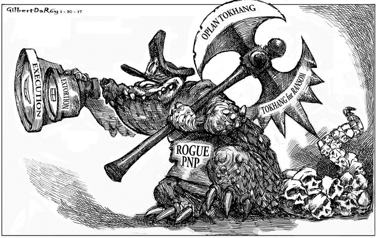

Art as a Voice Against Injustice
Art in Action
Artwork Analysis
Find out more about these artworks related to the War on Drugs.
“Oplan Tokhang” by Gilbert Daroy of Philippine Daily Inquirer
Rogue PNP
The scary-looking figure labeled “Rogue PNP” depicts the Philippine National Police’s abuse of power and corruption during the drug war. Appearance shows a predatory look that reflects the campaign’s violent nature.
Axe
The axe labeled “Oplan Tokhang” and “Tokhang for RANSOM” depicts the drug war’s violent procedure, emphasizing how the campaign became a mechanism for oppression rather than justice.
Scope
The scope, labeled “Execution” and “Extortion,” depicts how the campaign looks for victims where it can gain profit, hence corruption.
Trailing skulls
The skulls trailing the main figure portray what is the campaign doing to the victims, leaving them dead, which is the result of EJK
The overall message of the poster exposes the underlying misuse of the power of the authority of the drug war campaign, turning it into a symbol of terror. The artwork is a critique of the dehumanizing and violent nature of the drug war and the brutal methods employed by law enforcement under this campaign. The trail of skulls define the campaign, emphasizing its inhumanity and the widespread harm inflicted on marginalized communities.
New York Times' interpretation of Duterte’s ‘War on Drugs’
At a glance, the editorial cartoon mimics William Tell's heroic feat of archery. However, in the artwork, Rodrigo Duterte is holding a bazooka instead of a bow and arrow, aiming it at a worm-infested apple on top of the head of a man representing the Philippines. This cartoon shows that the Philippines is subject to harm whether the apple is hit or not. In contrast to the War on Drugs, the collateral damage from the campaign is indeed at an alarming level as innocent citizens die without due process.
Common Art Symbols Related to the War on Drugs
The War on Drugs has elicited the creation of artworks to convey the experienced trauma, violence, and loss by its victims. The following symbols are found to encapture the brutality, fear, and costs of the government's controversial campaign.
Skulls and Corpses
These emphasize the human cost of the War on Drugs, highlighting the high number of drug-related deaths that have occurred without due process or legal accountability. Victims of the drug war are often depicted as lifeless bodies, sometimes lying in the streets, to capture the violence and dehumanization caused by these killings.
Blood & the Color Red
Blood represents both violence and injustice. It shows the reality of the killings brought about by the War on Drugs, the bloodshed on the streets. Red is often used in paint, splatters, or drips that symbolize the violence associated with the blood spilled from bodies or smeared across images of the war's victims, highlighting the brutality.
Guns and Bullet Holes

These represent the violence and rapid escalation of the War on Drugs. The use of firearms is common in depictions of the war. These works often depict victims with gunshot wounds to the head or chest, or focus on firearms to directly associate the killings with state-sanctioned or extrajudicial violence.
Mothers and Children
They are often depicted to emphasize the impact of the killings on families. These figures evoke the innocence, grief, and loss associated with the war; they are used to humanize the victims. They depict a powerful image used to show the emotional devastation caused by the killings and the human cost of the campaign.
Cloth Covers
The depiction of victims with cloth covering them depicts the anonymity and erasure of their identity. Many of the war's victims are marginalized individuals or the poor, whose deaths are often overlooked. The covers emphasize how these victims are often treated as nameless statistics rather than human beings with their own lives, families, and stories.
Surveillance
This is used to symbolize state control, monitoring, and the loss of privacy in the drug war. The campaign has involved both state surveillance and the fear of being targeted by authorities, which creates an atmosphere of fear and paranoia. This suggests the omnipresence of state power under the drug war. It can also symbolize how the state views its citizens as either criminals or potential criminals.
Protest & Resistance Imagery
The depictions of raised fists, banners, and crowds in protest serve as symbols of resistance, defiance, and the fight for justice in the War on Drugs. These symbols are used in artworks calling for an end to the violence and for justice for the victims of the war. Protesters holding signs that call for justice, or groups raising their fists, are often shown in artworks as part of the broader resistance against the drug war's violence. They symbolize hope, unity, and the demand for accountability from the government.
Scales of Justice
The scales of justice are a classic symbol of fairness and the rule of law. When tilted, the scales represent corruption, the failure of the legal system, and the perversion of justice. This is a common symbol in artworks about the War on Drugs, as it critiques the lack of accountability for those responsible for the killings. An unbalanced set of scales may suggest that the justice system is no longer serving its function, emphasizing the gap between the ideal of justice and the reality of lawlessness brought by the campaign.